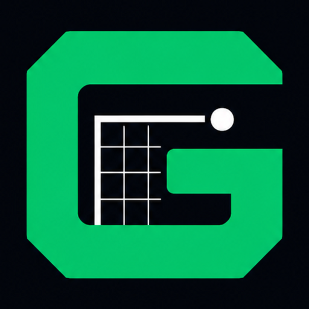
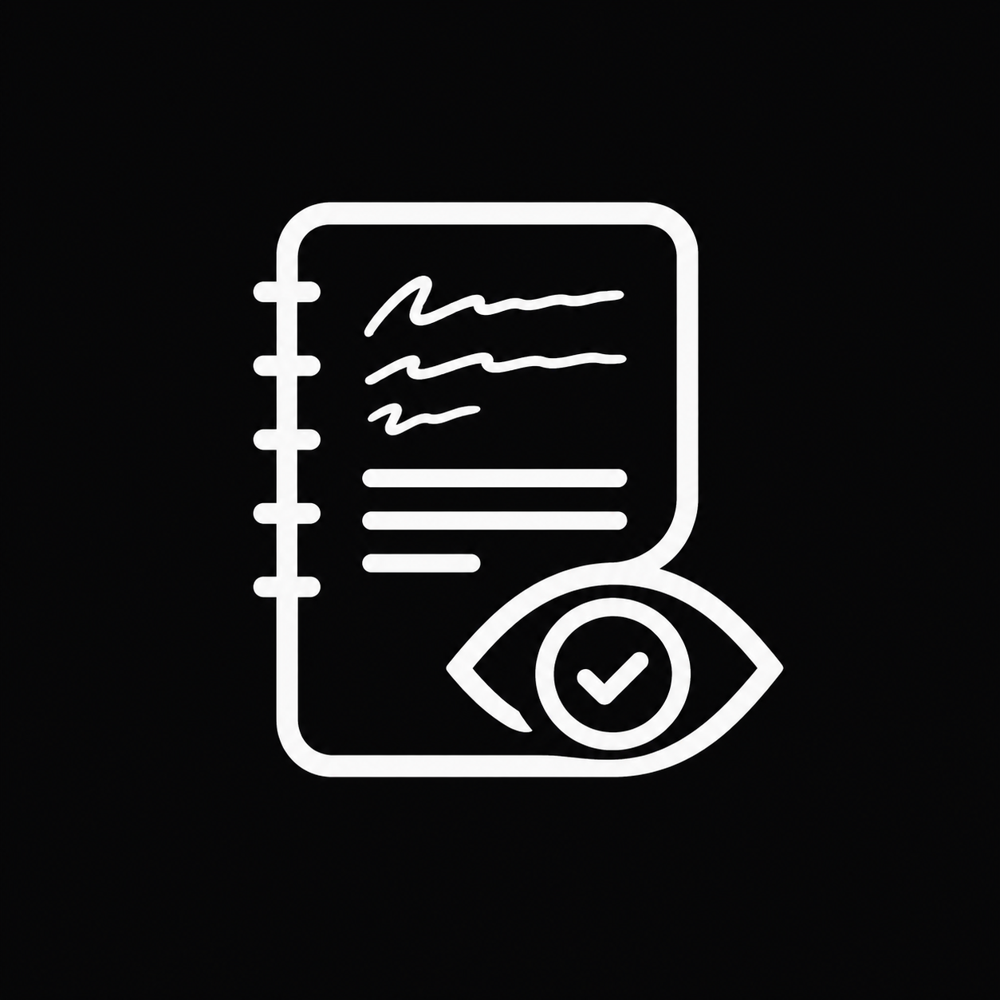
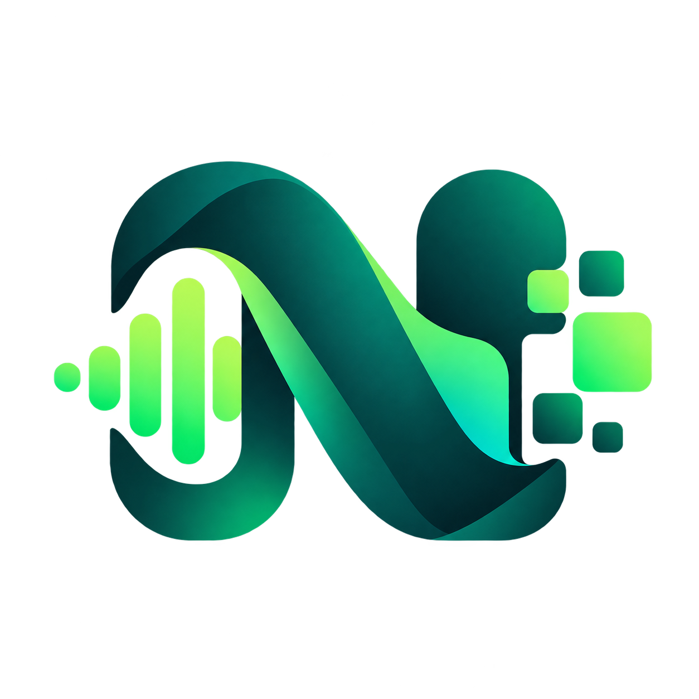

EgoScan
Gemma 4 · Hack Day Abeokuta
Paper to ledger. Reads a photo of a handwritten shop notebook and returns
checked records: Gemma transcribes, ordinary code does every sum and
cross-check, and the owner confirms before anything counts. Includes a
who-owes-me list, WhatsApp reminders and a builder API. The page covers
the benchmarks, the penetration test, the decisions, and what is not yet verified.
Gemma 4 · vision · FastAPI · SQLite · EgoTrack data model · MIT

Golazo
x402 · Injective
An agent-payable World Cup 2026 data API. Free endpoints serve the whole
tournament archive; premium endpoints are gated behind real x402
micropayments in USDC on Injective, and an AI agent pays for them itself,
no human in the loop. Also ships an MCP server and an installable Agent Skill.
x402 · EIP-3009 · Injective testnet · CCTP · MCP

LogSight
Offline · Gemma 4
Turns a SIWES student's messy industrial-training notes, typed, photographed
or spoken, into formal logbook entries, entirely offline on their own machine
via a local Gemma 4 model served by Ollama. No cloud, no API key, no data cost.
Gemma 4 · Ollama · FastAPI · anti-hallucination pipeline
SIWES LogChain
Monad Testnet
A tamper-proof onchain logbook for SIWES. Students submit daily entries as
keccak256 hashes, supervisors approve them onchain, and any institution can
verify a student's complete training record publicly, no wallet or account needed.
Monad testnet · Solidity · keccak256 attestation
AGBE
ADTC 2026 Finalist
A 1B-parameter language model tuned on West and Central African agronomy.
Runs fully offline on an 8GB laptop, no internet, no API key, no data cost.
A finalist in the Africa Deep Tech Challenge 2026.
1B offline LLM · agronomy fine-tune
CircuitCoach
IEEE Metaverse Challenge
A browser breadboard simulator that reports faults as real instrument
readings instead of advice, built for the 2026 IEEE Metaverse Grand
Challenge. The simulator runs fully in the browser; the optional AI
tutor needs a serverless backend and is not available in this mirror.
Breadboard simulator · fault diagnosis · Gemini tutor (canonical site only)

natlas-kit
NAIC 2026
A developer toolkit (Python and TypeScript) that makes NCAIR's
N-ATLaS language and speech models easy to build with. Built and
beta-tested for the National AI Innovation Challenge 2026.
Python · TypeScript · N-ATLaS · schema-constrained extraction